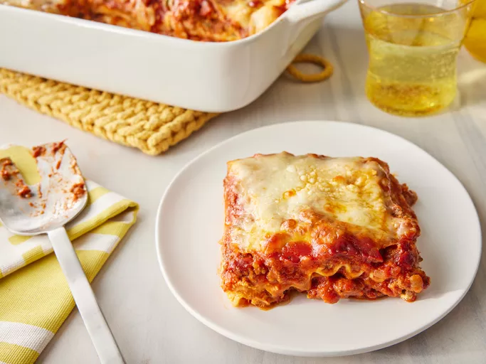

Home
Lasagna

Description
Lasagna, a culinary masterpiece of Italian cuisine, has captivated taste buds for centuries. Its intricate layers of pasta, sauce, cheese, and meat create a symphony of flavors and textures that leave an unforgettable impression. Describing lasagna is an art form in itself, as words struggle to capture the essence of this beloved dish. This comprehensive guide will delve into the intricacies of describing lasagna, providing a vocabulary that will do justice to its culinary excellence.
Ingredients
- 1 1/2 lb. ground beef
- 1 lb. hot breakfast sausage
- 2 cloves garlic, minced
- 2 (14.5-oz.) cans whole tomatoes
- 2 (6-oz.) cans tomato paste
- 4 Tbsp. dried parsley, divided
- 2 Tbsp. dried basil
- 2 1/2 tsp. salt
- 3 cups low-fat cottage cheese
- 2 eggs, beaten
- 1/2 cup grated (not shredded) parmesan cheese
- 1 Tbsp. olive oil
- 1 (1o-oz.) package lasagna noodles
- 1 lb. sliced mozzarella cheese
- Bring a large pot of water to a boil.
- Meanwhile, in a large skillet or saucepan, combine ground beef, sausage, and garlic. Cook over medium-high heat until browned. Drain half the fat; less if you’re feeling naughty. Add tomatoes, tomato paste, 2 tablespoons parsley, basil and 1 teaspoon salt. After adding the tomatoes, the sauce mixture should simmer for 45 minutes while you are working on the other steps.
- In a medium bowl, mix cottage cheese, beaten eggs, grated Parmesan, 2 more tablespoons parsley, and 1 more teaspoon salt. Stir together well. Set aside. Add 1/2 teaspoon salt and the olive oil to the boiling water, then cook the lasagna noodles until al dente (not overly cooked). Drain.
- To assemble: Arrange 4 cooked lasagna noodles in the bottom of a baking pan, overlapping if necessary. Spoon half the cottage cheese mixture over the noodles. Spread evenly. Cover cottage cheese with a layer of mozzarella cheese. Spoon a little less than half the meat/sauce mixture over the top. Repeat, ending with meat/sauce mixture. Sprinkle top generously with extra Parmesan.
- Either freeze, refrigerate for up to 2 days, or bake immediately: 350°F oven until the top is hot and bubbly, 20 to 30 minutes.